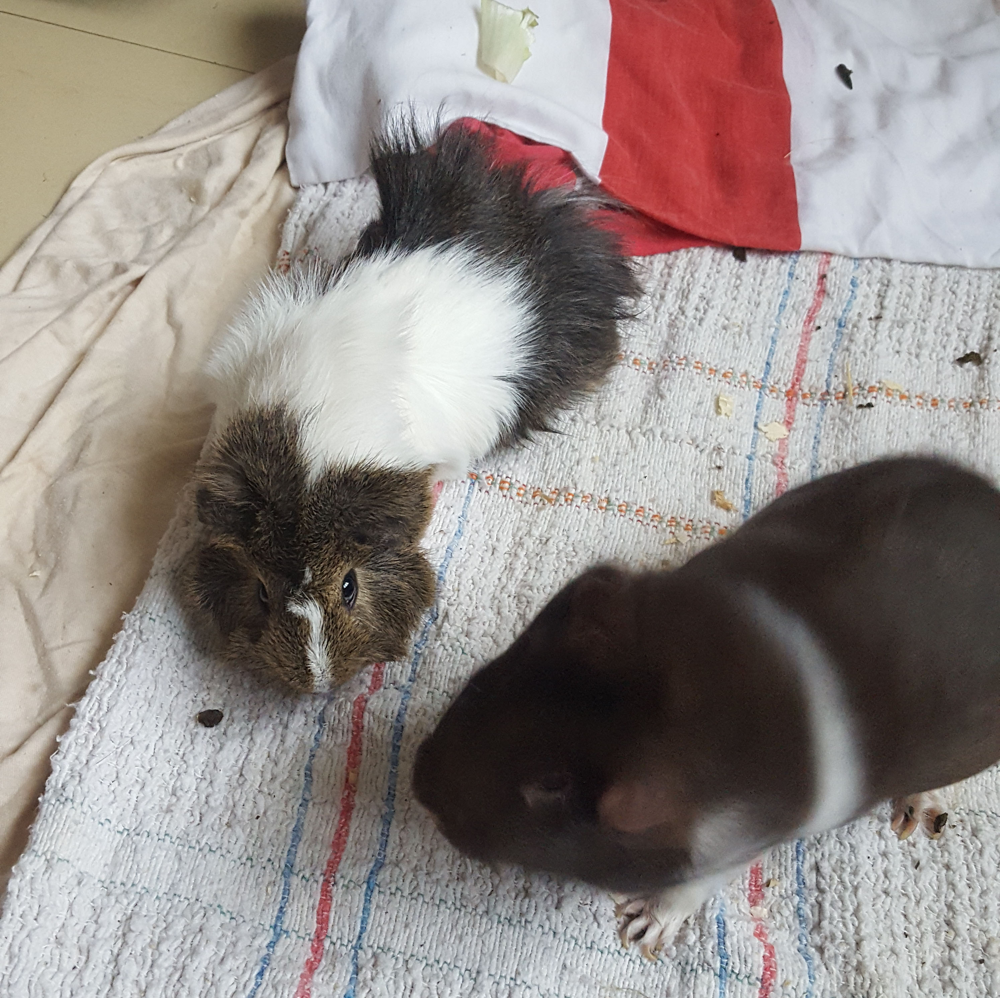

Qui sont Harry & Fouinette ?
Harry et Fouinette sont mes cochons d'inde! Ils sont trop mignons et drôles et adorent manger des carottes.
Leurs personnalités & caractéristiques
Leur relation : comment s'entendent-ils ?
- Fouinette sur Harry : "Bon, il est sympa, mais les jeunes, moi, je peux pas les suivre ! Il fait que de sauter et courir partout, et moi je veux juste me poser et manger un morceau..."
- Harry sur Fouinette : "J'adore Fouinette ! Mais c'est dommage qu'elle soit une grand-mère, elle passe son temps à se plaindre et fait pas grand chose de ses journées. Allez, viens jouer un peu !"